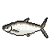
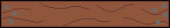

SB-01 Main Menu
MainMenu.tscn
/Assets/2D/Water%20background.png)

/Assets/2D/fish_sprites/Barramundi%20final.png)

Tight LinesStart
Multiplayer
Options
Exit
Scene & MechanicsAnimated water backdrop with ambient swimming fish sprites; wooden signboard title and stacked navigation buttons.
Controls (PC / Mobile)Mouse click, Arrow keys + Enter, or phone MENU swipe/tap. Clears multiplayer screen-side assignments on load.
Audio & FeedbackMusic:
Reluctance.mp3 (persists seamlessly across menu screens). Gold focus border on active button.TransitionsStart → Save Slots (SB-02) • Multiplayer → Lobby (SB-16) • Options → Overlay (SB-03) • Exit → Quit.
/Assets/2D/bait_sprites/Hardbait%20lure-c4e0.png)
/Assets/2D/bait_sprites/Top%20water%20lure-c64d.png)
/Assets/2D/Inside%20Cooler.png)
/Assets/2D/fish_sprites/Giant%20Snakehead.png)
/Assets/2D/fish_sprites/Mangrove%20red%20snapper-d727.png)
/Assets/2D/fish_sprites/Long%20Comb%20Sawfish.png)
/Assets/2D/fish_sprites/Yellow%20Fin%20Tuna.png)